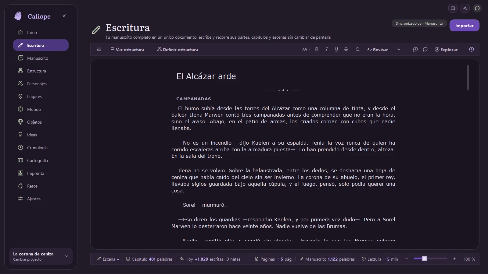
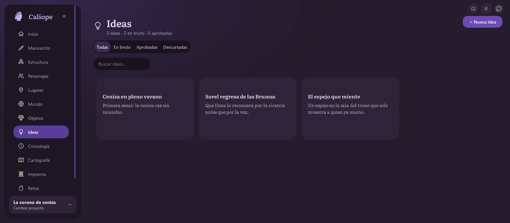

Invoca atus musas.
Mírala por dentro
Capturas de la versión 2.5.1 con un proyecto de ejemplo, en el tema oscuro.





Cada pieza, en su sitio
Cada parte de tu historia tiene su lugar, y todas hablan entre sí. Pasa el ratón por una tarjeta, o púlsala, para ver qué hace.
Escritura
Todo el manuscrito reunido en un solo documento, con índice y sincronía con Manuscrito: partes, capítulos, escenas, versiones y corrector bajo demanda.
Estructura
Una Escaleta de tarjetas por actos o tramas, y una Matriz que te enseña dónde se rompe el ritmo.
Personajes
Fichas a medida para personajes, lugares y objetos, enlazadas con tus escenas.
Mundo narrativo
Universo, mitología, bestiario, historia y civilizaciones, con campos para cada entrada.
Relaciones
Un mapa interactivo de vínculos y árboles genealógicos que se mantienen iguales entre sí.
Cronología
Líneas temporales con el calendario que tu mundo necesite y edades a tu medida.
Cartografía
Mapas de mundos y planos de ciudades con capas, rejilla, símbolos y pines enlazados a tus fichas.
Imprenta
Compila tu novela con una maquetación cuidada: EPUB, PDF y AZW3 para tu e-reader.
Del manuscrito al libro, sin salir de Calíope
Compila tu novela con una maquetación cuidada y llévala a tus lectores o a tu e-reader, todo en local.
AZW3 requiere tener Calibre instalado; sin él, Calíope genera un MOBI propio.
La corona de ceniza
—No te muevas —susurró alguien desde la penumbra—. Todavía no.
Las velas se apagaron una a una, como si el aire hubiera decidido callar.
Nadie respiró hasta que la última llama se dobló, tembló y volvió a erguirse.
Ilustración de ejemplo de cómo se vería una página maquetada.
Tu obra vive en tu ordenador
Sin suscripciones, sin registro y sin nube. Escribes, y lo que escribes se queda donde tú lo guardas.
Funciona sin conexión
Manuscrito, fichas, mapas, corrector, sinónimos, dictado y exportación son locales.
Sin cuentas ni suscripciones
Instalas, abres y escribes. No hay registro ni cuotas.
Copias a tu manera
Guarda cada proyecto en un archivo y llévalo donde quieras.
¿Y si llamamos a más musas?
Calíope ya está contigo. Si te apetece algo más de compañía, hay dos musas más. Las dos son opcionales y se apagan desde Ajustes.
ClíoIA
Un chat con dos modos. Local, con el que empieza siempre, no es una IA y nada sale de tu ordenador. IA es la única parte de Calíope con inteligencia artificial, y no recibe el contenido de tu proyecto.
TalíaSin IA
Tu compañera de escritura: metas diarias, rachas, desafíos creativos, Modo Foco y Ultra Foco, insignias y comentarios amables sobre tu historia.
Instala Calíope en un minuto
Versión 2.7.1. Gratis, sin cuenta y sin conexión: tu obra se queda en tu ordenador.
- Windows: 10 u 11.
- Mac: con chip Apple (M1, M2, M3, M4…).
- Linux: por ahora sin instalador.
- Para escribir no hace falta internet ni registro.
En Windows
- Descarga el instalador
.exey ábrelo. - Si SmartScreen avisa, pulsa Más información › Ejecutar de todas formas: el instalador aún no está firmado.
- Sigue el asistente; no necesita permisos de administrador.
En Mac
- Descarga el
.dmg, ábrelo y arrastra Calíope a Aplicaciones. - La primera vez: clic derecho (o Control + clic) › Abrir › Abrir.
- Si dice que está dañada, escribe en Terminal:
xattr -dr com.apple.quarantine /Applications/Caliope.app